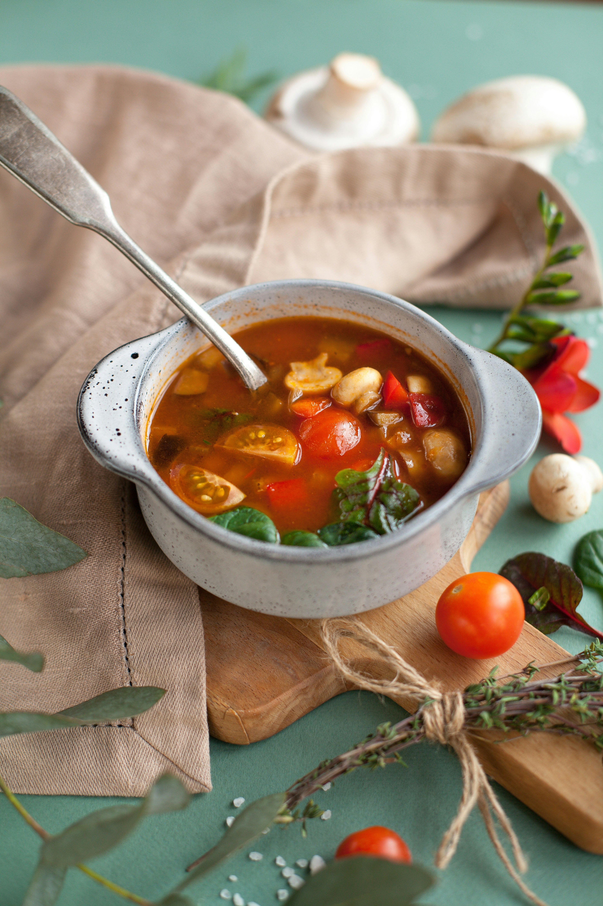

Home
Classic Minestrone

Description
A hearty Italian vegetable soup made with beans, pasta, and seasonal vegetables simmered in a savory tomato broth.
It's a wholesome, comforting dish that's both filling and nutritious.
Ingredients
- 3 tbsp olive oil (plus extra to serve)
- 1 onion (finely chopped)
- 1 celery stick (finely chopped)
- 1 carrot (peeled and finely chopped)
- 1 courgette (finely chopped)
- 70g diced smoked pancetta
- 1 large garlic clove (crushed)
- ½ tsp dried oregano
- 1 x 400g can cannellini beans
- 1 x 400g can chopped tomatoes
- 2 tbsp tomato purée
- 1.2 litre vegetable stock
- 1 bay leaf
- 70g small pasta
- 100g greens (kale, chard or cavolo nero work well)
- handful of basil
- finely grated parmesan (to serve)
Method
- Heat the oil in a large saucepan or casserole pot over a low-medium heat and gently fry the onion, celery, carrot, courgette and pancetta for 10 mins.
Add the garlic and oregano, and cook for 1 min. Tip in the beans, chopped tomatoes, purée, stock and bay leaf. Season to taste. Bring to the simmer and cook for 30 mins.
- Add the pasta and greens, and cook for a further 10 mins. Ladle into bowls and scatter with the basil and some parmesan.
Credits
Recipe shared by Esther Clark